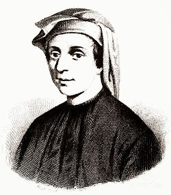

— Quem é Fibonacci? — Nascido na Itália, Leonardo de Pisa, popularmente conhecido como Fibonacci, foi o matemático ocidental mais talentoso de sua era. Filho de um funcionário público e comerciante, ele viajou bastante pelas regiões do Mediterrâneo, onde teve contato direto com os avançados métodos aritméticos do mundo islâmico. Em 1202, Fibonacci publicou a obra de sua vida, o livro Liber Abaci (O Livro do Cálculo). Nesta publicação, além de ensinar os europeus a usarem os algarismos arábicos atuais e o conceito do número zero, ele apresentou uma sequência numérica que descrevia o crescimento teórico de uma população de coelhos. Essa sucessão de números revelou-se um padrão essencial na biologia, na arte e no design, intimamente ligado à Proporção Áurea e à geometria das formas na natureza.
A concha do molusco Nautilus é um dos exemplos mais célebres da Proporção Áurea na biologia. Cada nova câmara que o animal constrói para viver segue rigorosamente os fatores de crescimento da sequência, expandindo seu tamanho sem alterar sua forma original.
O miolo de um girassol organiza suas sementes em espirais cruzadas que correm em direções opostas. Se você contar essas espirais, quase sempre encontrará números vizinhos da sequência de Fibonacci, como 34 e 55. Isso otimiza o espaço.
Até mesmo a estrutura de galáxias espirais se alinha perfeitamente com os retângulos de ouro baseados nos cálculos de Fibonacci. O design que governa uma pequena planta na Terra é exatamente o mesmo que organiza bilhões de estrelas no universo.